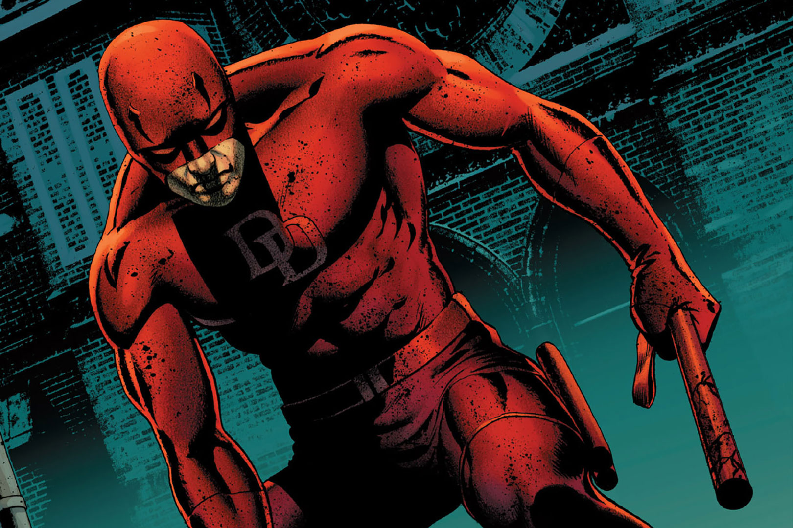

Developers favorite character
my favorite character is DareDevil



"Blinded as a boy, Matt Murdock used his sonar-strong
hearing to aid him in his martial arts training,
becoming a fight-for-the-underdog defense attorney
by day and a masked vigilante called Daredevil by night." -marvel.com
DareDevil's first apperance was in April 1964 with Daredevil no. 1
DareDevil has had five diffrent suits (not including alternative realitys)
"The Prototype", "Red and Yellow", "Red Suit", "Armored Suit", "Shadowland Suit"
DareDevil is a part of the deffenders a group of street level heros
DareDevil made his MCU debut in Spiderman Now Way Home